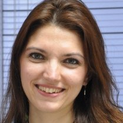

<div class="container">
	<div class="row">
        <div id="speaker-detail" class="col-lg-8 col-lg-offset-3">
            <div class="row">
            	<button title="Close (Esc)" type="button" class="mfp-close">×</button>
                
                <div class="col-md-4 col-lg-4">
                    <br />
                </div>
                    
                <div class="col-md-8 col-lg-8">
                    <h2>Ebru Meriç Akgül - Founder & Professional IT Recruiter</h2>
                    <h3>Talent (Star) Wars in IT</h3>
                    <p>Ebru Meric Akgul had her BSc. degree from Industrial Engineering in ITU and MSc.University. In 2003, she started working in Siemens as a project engineer in Industrial IT group, in various software projects in different countries such as Germany and Austria. In 2007, Ebru pioneered in founding evoline TR to develop and sell software projects from Turkey to abroad. Knowing that “human” is the most important asset in software, she took over “Human Resources” responsibility. Her involvement with software development processes made the firm the 5th biggest software exporter of Turkey. In 2012, Ebru founded sHR. Consultancy, the only IT Recruitment House in Turkey with engineering background providing Tech recruitment services on an international scope, especially with software focus, and professional coaching.</p>
                    <p>Linkedin : tr.linkedin.com/in/ebrumericakgul<br />
                    </p>
                </div>
                            
            </div>
        </div>
    </div>
</div>